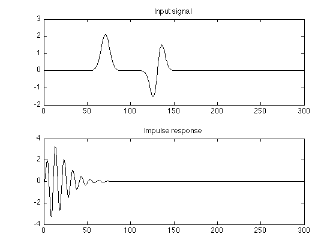
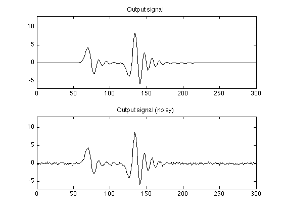
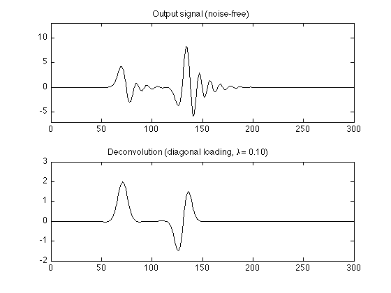
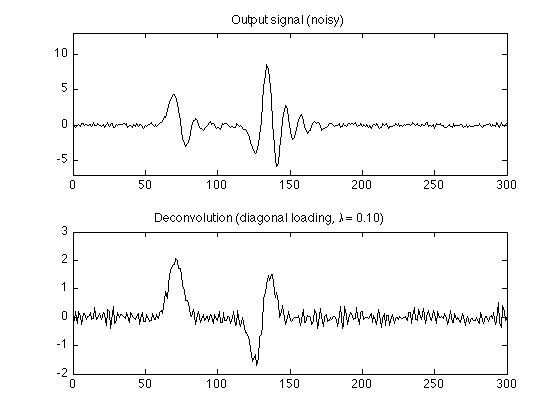
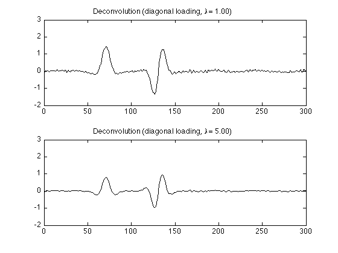
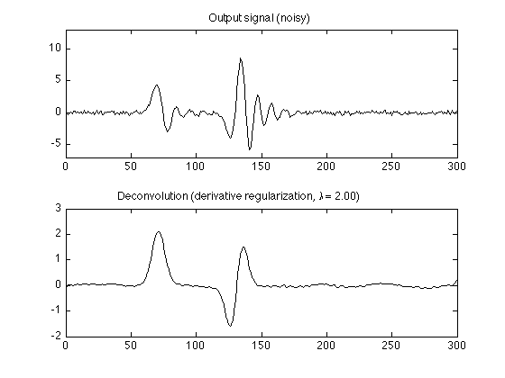

Least square deconvolution
This example illustrates devonvolution using least squares
Ivan Selesnick selesi@poly.edu
Contents
Start
clear
close all
Create data
N = 300; n = (0:N-1)'; % n : discrete-time index w = 5; n1 = 70; n2 = 130; x = 2.1 * exp(-0.5*((n-n1)/w).^2) - 0.5*exp(-0.5*((n-n2)/w).^2).*(n2 - n); % x : input signal h = n .* (0.9 .^n) .* sin(0.2*pi*n); % h : impulse response figure(1) clf subplot(2, 1, 1) plot(x) title('Input signal'); YL1 = [-2 3]; ylim(YL1); subplot(2, 1, 2) plot(h) title('Impulse response');
Output data
randn('state', 0); % Set state for reproducibility y = conv(h, x); y = y(1:N); % y : output signal (noise-free) yn = y + 0.2 * randn(N, 1); % yn : output signal (noisy) figure(2) clf subplot(2, 1, 1) plot(y); YL2 = [-7 13]; ylim(YL2); title('Output signal'); subplot(2, 1, 2) plot(yn); title('Output signal (noisy)'); ylim(YL2);
Convolution matrix H
Create convolution matrix H and verify that H*x is the same as y
H = convmtx(h, N); H = H(1:N, :); % H : convolution matrix % Verify that H*x is the same as y e = y - H * x; % should be zero max(abs(e))
ans =
0
Direct solve (fails)
Attempting to solve H*x = y leads to a solution of all NaN's (not a number)
g = H \ y;
% H is singular
Warning: Matrix is singular to working precision.
g(1:10)
ans = NaN NaN NaN NaN NaN NaN NaN NaN NaN NaN
Diagonal loading (noise-free)
Diagonal overcomes the singularity of H.
lam = 0.1; g = (H'*H + lam * eye(N)) \ (H' * y); figure(1) clf subplot(2, 1, 1) plot(y); YL2 = [-7 13]; ylim(YL2); title('Output signal (noise-free)'); subplot(2, 1, 2) plot(g) ylim(YL1); title(sprintf('Deconvolution (diagonal loading, \\lambda = %.2f)', lam));
Diagonal loading (noisy)
lam = 0.1; g = (H'*H + lam * eye(N)) \ (H' * yn); figure(1) clf subplot(2, 1, 1) plot(yn); title('Output signal (noisy)'); ylim(YL2); subplot(2, 1, 2) plot(g) title(sprintf('Deconvolution (diagonal loading, \\lambda = %.2f)', lam));
lam = 1.0; g = (H'*H + lam * eye(N)) \ (H' * yn); figure(2) clf subplot(2, 1, 1) plot(g) ylim(YL1) title(sprintf('Deconvolution (diagonal loading, \\lambda = %.2f)', lam)); lam = 5.0; g = (H'*H + lam * eye(N)) \ (H' * yn); subplot(2, 1, 2) plot(g) ylim(YL1) title(sprintf('Deconvolution (diagonal loading, \\lambda = %.2f)', lam));
Derivative regularization (noisy)
e = ones(N, 1);
D = spdiags([e -2*e e], 0:2, N-2, N); % second-order difference
First corner of D
full(D(1:5, 1:5))
ans =
1 -2 1 0 0
0 1 -2 1 0
0 0 1 -2 1
0 0 0 1 -2
0 0 0 0 1
Last corner of D
full(D(end-4:end, end-4:end))
ans =
1 0 0 0 0
-2 1 0 0 0
1 -2 1 0 0
0 1 -2 1 0
0 0 1 -2 1
Solve least squares problem
lam = 2.0; g = (H'*H + lam * (D'*D)) \ (H' * yn); figure(1) clf subplot(2, 1, 1) plot(yn); title('Output signal (noisy)'); ylim(YL2); subplot(2, 1, 2) plot(g) title(sprintf('Deconvolution (derivative regularization, \\lambda = %.2f)', lam));